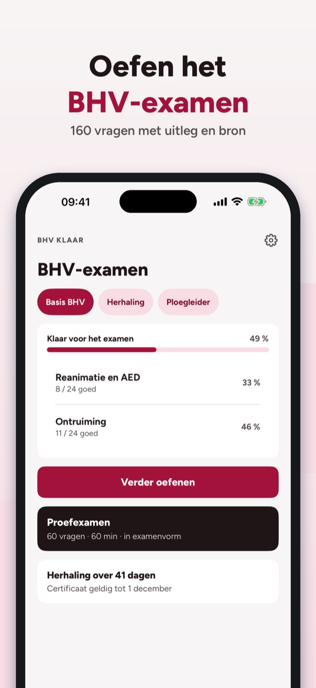
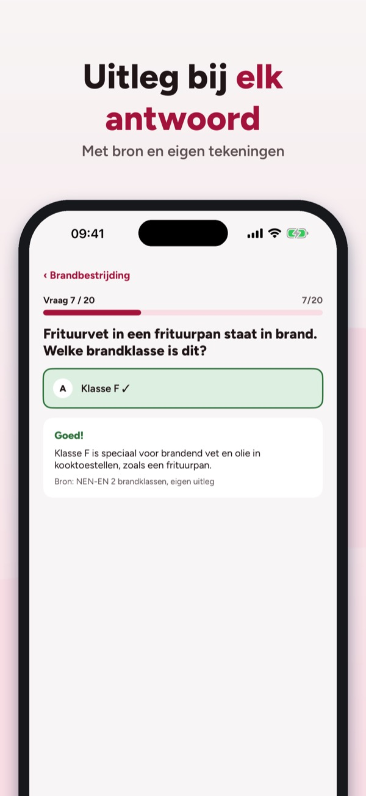
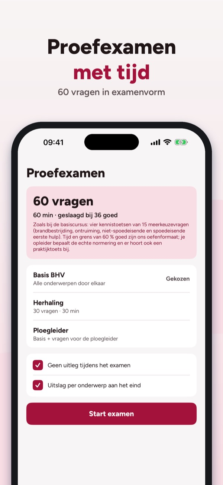

Brand, EHBO en reanimatie
Oefen het BHV-examen en je herhaling: vragen met uitleg, proefexamens, brandklassen en een herinnering voor je certificaat – zonder internet.



BHV Klaar helpt je oefenen voor het BHV-examen en de jaarlijkse herhaling – brand, ontruiming, eerste hulp en reanimatie met uitleg.
• Vragen per onderwerp met uitleg bij elk antwoord
Je kunt 20 vragen, de begrippenlijst en de checklist zonder aankoop gebruiken. De volledige versie is een eenmalige aankoop die alle vragen, proefexamens en statistiek ontgrendelt. Geen abonnement.
BHV Klaar is onafhankelijk en niet verbonden aan het NIBHV, een opleider of de overheid. Je certificaat haal je bij je cursus.
Terms of Use (EULA): https://www.apple.com/legal/internet-services/itunes/dev/stdeula/
Privacy: https://baytechbv.github.io/privacy/bhv-examen-nl/